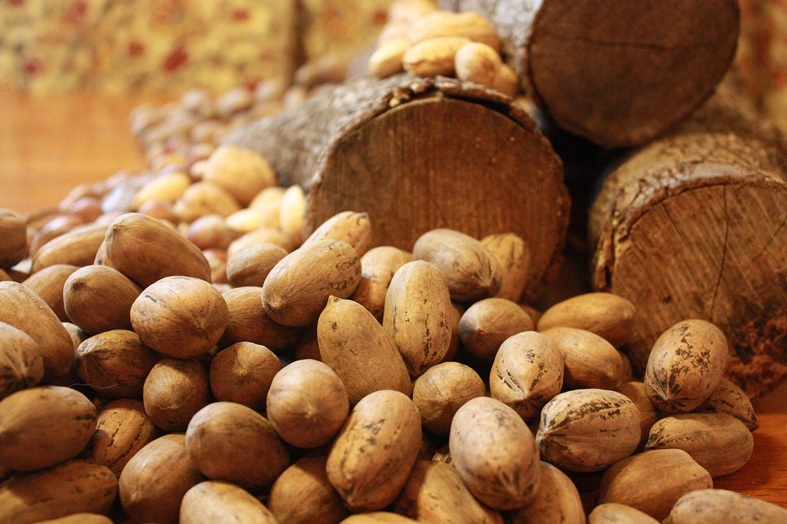

制作側の連想
手帳の部位を、配置図にしてみる
手帳の部位を図にしたもので、制作側の連想です。お店の理念・由来とは無関係で、実際の製品の仕様を示すものでもありません。 六つの部位に番号をふり、上の図と並べています。
凡例
六つの部位
- 1表紙手帳の外側を包む板状の部分で、中のページを守るところ。布・革・紙など、素材はいろいろある。
- 2背表紙と本文をつなぐ折り目の部分で、糸などでとじてあるところ。
- 3ゴムバンド表紙を閉じておくための、ゴムでできたひも状の部分。
- 4しおりひもページのあいだから伸びる細いひもで、開いた位置の目印にするもの。
- 5小口重ねた紙の端がそろって見える面で、ページの層が線のように見える。
- 6角表紙の四隅にあたる部分で、丸みをつけた形もある。
写真(イメージ)
写真(イメージ)





写真はイメージです。お店のものではありません。
ご案内
お店のこと(確認できたものだけ)
| 所在地 | 〒951-8068 新潟県新潟市中央区上大川前通６番町１２０２ |
|---|---|
| 電話 | 準備中 |
| 営業時間 | 準備中 |
| 定休日 | 準備中 |
| ご予約 | 準備中 |
| 駐車場 | 準備中 |
| SNS | Instagram @nitonitoya |